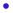

<!doctype html>
<html lang="en">
    <head>
        <meta charset="utf-8">
        <meta http-equiv="X-UA-Compatible" content="IE=edge">
        <meta name="viewport" content="initial-scale=1,user-scalable=no,maximum-scale=1,width=device-width">
        <meta name="mobile-web-app-capable" content="yes">
        <meta name="apple-mobile-web-app-capable" content="yes">
        <link rel="stylesheet" href="css/leaflet.css">
        <link rel="stylesheet" href="css/qgis2web.css"><link rel="stylesheet" href="css/fontawesome-all.min.css">
        <link rel="stylesheet" href="css/filter.css">
<link rel="stylesheet" href="css/nouislider.min.css">
        <style>
        html, body, #map {
            width: 100%;
            height: 100%;
            padding: 0;
            margin: 0;
        }
        </style>
        <title></title>
    </head>
    <body>
        <div id="map">
        </div>
        <script src="js/qgis2web_expressions.js"></script>
        <script src="js/leaflet.js"></script>
        <script src="js/leaflet.rotatedMarker.js"></script>
        <script src="js/leaflet.pattern.js"></script>
        <script src="js/leaflet-hash.js"></script>
        <script src="js/Autolinker.min.js"></script>
        <script src="js/rbush.min.js"></script>
        <script src="js/labelgun.min.js"></script>
        <script src="js/labels.js"></script>
        <script src="js/tailDT.js"></script>
<script src="js/nouislider.min.js"></script>
<script src="js/wNumb.js"></script>
        <script src="data/semer_SCIMAP_3.js"></script>
        <script>
        var map = L.map('map', {
            zoomControl:true, maxZoom:28, minZoom:1
        }).fitBounds([[54.2210602530329,-2.2491238391606645],[54.300543556313485,-2.043155643839602]]);
        var hash = new L.Hash(map);
        map.attributionControl.setPrefix('<a href="https://github.com/tomchadwin/qgis2web" target="_blank">qgis2web</a> &middot; <a href="https://leafletjs.com" title="A JS library for interactive maps">Leaflet</a> &middot; <a href="https://qgis.org">QGIS</a>');
        var autolinker = new Autolinker({truncate: {length: 30, location: 'smart'}});
        var bounds_group = new L.featureGroup([]);
        function setBounds() {
        }
        map.createPane('pane_GoogleSatelliteHybrid_0');
        map.getPane('pane_GoogleSatelliteHybrid_0').style.zIndex = 400;
        var layer_GoogleSatelliteHybrid_0 = L.tileLayer('http://mt1.google.com/vt/lyrs=y&x={x}&y={y}&z={z}', {
            pane: 'pane_GoogleSatelliteHybrid_0',
            opacity: 1.0,
            attribution: '',
            minZoom: 1,
            maxZoom: 28,
            minNativeZoom: 0,
            maxNativeZoom: 22
        });
        layer_GoogleSatelliteHybrid_0;
        map.addLayer(layer_GoogleSatelliteHybrid_0);
        map.createPane('pane_semer_netwet_1');
        map.getPane('pane_semer_netwet_1').style.zIndex = 401;
        var img_semer_netwet_1 = 'data/semer_netwet_1.png';
        var img_bounds_semer_netwet_1 = [[54.217437022245335,-2.2439156373294376],[54.31141662142559,-2.024069193875712]];
        var layer_semer_netwet_1 = new L.imageOverlay(img_semer_netwet_1,
                                              img_bounds_semer_netwet_1,
                                              {pane: 'pane_semer_netwet_1'});
        bounds_group.addLayer(layer_semer_netwet_1);
        map.addLayer(layer_semer_netwet_1);
        map.createPane('pane_semer_erosion_2');
        map.getPane('pane_semer_erosion_2').style.zIndex = 402;
        var img_semer_erosion_2 = 'data/semer_erosion_2.png';
        var img_bounds_semer_erosion_2 = [[54.217437022245335,-2.2439156373294376],[54.31141662142559,-2.024069193875712]];
        var layer_semer_erosion_2 = new L.imageOverlay(img_semer_erosion_2,
                                              img_bounds_semer_erosion_2,
                                              {pane: 'pane_semer_erosion_2'});
        bounds_group.addLayer(layer_semer_erosion_2);
        map.addLayer(layer_semer_erosion_2);
        function pop_semer_SCIMAP_3(feature, layer) {
            var popupContent = '<table>\
                    <tr>\
                        <td colspan="2">' + (feature.properties['ID'] !== null ? autolinker.link(feature.properties['ID'].toLocaleString()) : '') + '</td>\
                    </tr>\
                    <tr>\
                        <td colspan="2">' + (feature.properties['X'] !== null ? autolinker.link(feature.properties['X'].toLocaleString()) : '') + '</td>\
                    </tr>\
                    <tr>\
                        <td colspan="2">' + (feature.properties['Y'] !== null ? autolinker.link(feature.properties['Y'].toLocaleString()) : '') + '</td>\
                    </tr>\
                    <tr>\
                        <td colspan="2">' + (feature.properties['EROSION RIS'] !== null ? autolinker.link(feature.properties['EROSION RIS'].toLocaleString()) : '') + '</td>\
                    </tr>\
                </table>';
            layer.bindPopup(popupContent, {maxHeight: 400});
        }

        function style_semer_SCIMAP_3_0(feature) {
            if (feature.properties['EROSION RIS'] >= 0.000572 && feature.properties['EROSION RIS'] <= 0.008955 ) {
                return {
                pane: 'pane_semer_SCIMAP_3',
                radius: 4.0,
                stroke: false,
                fill: true,
                fillOpacity: 1,
                fillColor: 'rgba(12,20,255,1.0)',
                interactive: true,
            }
            }
            if (feature.properties['EROSION RIS'] >= 0.008955 && feature.properties['EROSION RIS'] <= 0.017337 ) {
                return {
                pane: 'pane_semer_SCIMAP_3',
                radius: 4.0,
                stroke: false,
                fill: true,
                fillOpacity: 1,
                fillColor: 'rgba(60,16,204,1.0)',
                interactive: true,
            }
            }
            if (feature.properties['EROSION RIS'] >= 0.017337 && feature.properties['EROSION RIS'] <= 0.025720 ) {
                return {
                pane: 'pane_semer_SCIMAP_3',
                radius: 4.0,
                stroke: false,
                fill: true,
                fillOpacity: 1,
                fillColor: 'rgba(109,12,153,1.0)',
                interactive: true,
            }
            }
            if (feature.properties['EROSION RIS'] >= 0.025720 && feature.properties['EROSION RIS'] <= 0.034102 ) {
                return {
                pane: 'pane_semer_SCIMAP_3',
                radius: 4.0,
                stroke: false,
                fill: true,
                fillOpacity: 1,
                fillColor: 'rgba(158,8,102,1.0)',
                interactive: true,
            }
            }
            if (feature.properties['EROSION RIS'] >= 0.034102 && feature.properties['EROSION RIS'] <= 0.042485 ) {
                return {
                pane: 'pane_semer_SCIMAP_3',
                radius: 4.0,
                stroke: false,
                fill: true,
                fillOpacity: 1,
                fillColor: 'rgba(207,4,51,1.0)',
                interactive: true,
            }
            }
            if (feature.properties['EROSION RIS'] >= 0.042485 && feature.properties['EROSION RIS'] <= 0.050867 ) {
                return {
                pane: 'pane_semer_SCIMAP_3',
                radius: 4.0,
                stroke: false,
                fill: true,
                fillOpacity: 1,
                fillColor: 'rgba(255,0,0,1.0)',
                interactive: true,
            }
            }
        }
        map.createPane('pane_semer_SCIMAP_3');
        map.getPane('pane_semer_SCIMAP_3').style.zIndex = 403;
        map.getPane('pane_semer_SCIMAP_3').style['mix-blend-mode'] = 'normal';
        var layer_semer_SCIMAP_3 = new L.geoJson(json_semer_SCIMAP_3, {
            attribution: '',
            interactive: true,
            dataVar: 'json_semer_SCIMAP_3',
            layerName: 'layer_semer_SCIMAP_3',
            pane: 'pane_semer_SCIMAP_3',
            onEachFeature: pop_semer_SCIMAP_3,
            pointToLayer: function (feature, latlng) {
                var context = {
                    feature: feature,
                    variables: {}
                };
                return L.circleMarker(latlng, style_semer_SCIMAP_3_0(feature));
            },
        });
        bounds_group.addLayer(layer_semer_SCIMAP_3);
        map.addLayer(layer_semer_SCIMAP_3);
        var baseMaps = {};
        L.control.layers(baseMaps,{'semer_SCIMAP<br /><table><tr><td style="text-align: center;"></td><td>0.0006 - 0.009</td></tr><tr><td style="text-align: center;"></td><td>0.009 - 0.0173</td></tr><tr><td style="text-align: center;"></td><td>0.0173 - 0.0257</td></tr><tr><td style="text-align: center;"></td><td>0.0257 - 0.0341</td></tr><tr><td style="text-align: center;"></td><td>0.0341 - 0.0425</td></tr><tr><td style="text-align: center;"></td><td>0.0425 - 0.0509</td></tr></table>': layer_semer_SCIMAP_3,"semer_erosion": layer_semer_erosion_2,"semer_netwet": layer_semer_netwet_1,"Google Satellite Hybrid": layer_GoogleSatelliteHybrid_0,}).addTo(map);
        setBounds();
        var mapDiv = document.getElementById('map');
        var row = document.createElement('div');
        row.className="row";
        row.id="all";
        row.style.height = "100%";
        var col1 = document.createElement('div');
        col1.className="col9";
        col1.id = "mapWindow";
        col1.style.height = "99%";
        col1.style.width = "80%";
        col1.style.display = "inline-block";
        var col2 = document.createElement('div');
        col2.className="col3";
        col2.id = "menu";
        col2.style.display = "inline-block";
        mapDiv.parentNode.insertBefore(row, mapDiv);
        document.getElementById("all").appendChild(col1);
        document.getElementById("all").appendChild(col2);
        col1.appendChild(mapDiv)
        var Filters = {"Y": "real"};
        function filterFunc() {
          map.eachLayer(function(lyr){
          if ("options" in lyr && "dataVar" in lyr["options"]){
            features = this[lyr["options"]["dataVar"]].features.slice(0);
            try{
              for (key in Filters){
                keyS = key.replace(/[^a-zA-Z0-9_]/g, "")
                if (Filters[key] == "str" || Filters[key] == "bool"){
                  var selection = [];
                  var options = document.getElementById("sel_" + keyS).options
                  for (var i=0; i < options.length; i++) {
                    if (options[i].selected) selection.push(options[i].value);
                  }
                    try{
                      if (key in features[0].properties){
                        for (i = features.length - 1;
                          i >= 0; --i){
                          if (selection.indexOf(
                          features[i].properties[key])<0
                          && selection.length>0) {
                          features.splice(i,1);
                          }
                        }
                      }
                    } catch(err){
                  }
                }
                if (Filters[key] == "int"){
                  sliderVals =  document.getElementById(
                    "div_" + keyS).noUiSlider.get();
                  try{
                    if (key in features[0].properties){
                    for (i = features.length - 1; i >= 0; --i){
                      if (parseInt(features[i].properties[key])
                          < sliderVals[0]
                          || parseInt(features[i].properties[key])
                          > sliderVals[1]){
                            features.splice(i,1);
                          }
                        }
                      }
                    } catch(err){
                    }
                  }
                if (Filters[key] == "real"){
                  sliderVals =  document.getElementById(
                    "div_" + keyS).noUiSlider.get();
                  try{
                    if (key in features[0].properties){
                    for (i = features.length - 1; i >= 0; --i){
                      if (features[i].properties[key]
                          < sliderVals[0]
                          || features[i].properties[key]
                          > sliderVals[1]){
                            features.splice(i,1);
                          }
                        }
                      }
                    } catch(err){
                    }
                  }
                if (Filters[key] == "date"
                  || Filters[key] == "datetime"
                  || Filters[key] == "time"){
                  try{
                    if (key in features[0].properties){
                      HTMLkey = key.replace(/[&\/\\#,+()$~%.'":*?<>{} ]/g, '');
                      startdate = document.getElementById("dat_" +
                        HTMLkey + "_date1").value.replace(" ", "T");
                      enddate = document.getElementById("dat_" +
                        HTMLkey + "_date2").value.replace(" ", "T");
                      for (i = features.length - 1; i >= 0; --i){
                        if (features[i].properties[key] < startdate
                          || features[i].properties[key] > enddate){
                          features.splice(i,1);
                        }
                      }
                    }
                  } catch(err){
                  }
                }
              }
            } catch(err){
            }
          this[lyr["options"]["layerName"]].clearLayers();
          this[lyr["options"]["layerName"]].addData(features);
          }
          })
        }
            document.getElementById("menu").appendChild(
                document.createElement("div"));
            var div_Y = document.createElement("div");
            div_Y.id = "div_Y";
            div_Y.className = "slider";
            document.getElementById("menu").appendChild(div_Y);
            var lab_Y = document.createElement('div');
            lab_Y.innerHTML  = 'Y: <span id="val_Y"></span>';
            lab_Y.className = 'filterlabel';
            document.getElementById("menu").appendChild(lab_Y);
            var reset_Y = document.createElement('div');
            reset_Y.innerHTML = 'clear filter';
            reset_Y.className = 'filterlabel';
            lab_Y.className = 'filterlabel';
            reset_Y.onclick = function() {
                sel_Y.noUiSlider.reset();
            };
            document.getElementById("menu").appendChild(reset_Y);
            var sel_Y = document.getElementById('div_Y');
            noUiSlider.create(sel_Y, {
                connect: true,
                start: [481280.86639731, 487830.86639731],
                range: {
                min: 481280.86639731,
                max: 487830.86639731
                }
            });
            sel_Y.noUiSlider.on('update', function (values) {
            val_Y = document.getElementById('val_Y');
            val_Y.innerHTML = values.join(' - ');
                filterFunc()
            });
        L.ImageOverlay.include({
            getBounds: function () {
                return this._bounds;
            }
        });
        </script>
    </body>
</html>
